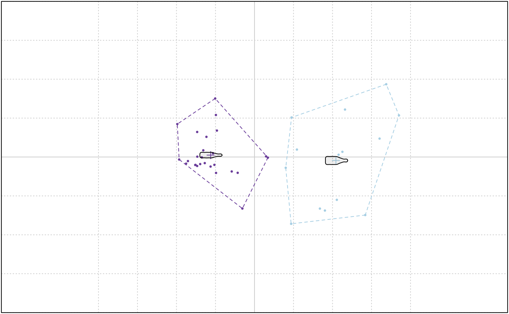

A basic implementation of kmedoids on top of cluster::pam Beware that morphospaces are calculated so far for the 1st and 2nd component.
Usage
KMEDOIDS(x, k, metric = "euclidean", ...)
# Default S3 method
KMEDOIDS(x, k, metric = "euclidean", ...)
# S3 method for class 'Coe'
KMEDOIDS(x, k, metric = "euclidean", ...)
# S3 method for class 'PCA'
KMEDOIDS(x, k, metric = "euclidean", retain, ...)Arguments
- x
- k
numeric number of centers
- metric
one of
euclidean(default) ormanhattan, to feed cluster::pam- ...
additional arguments to feed cluster::pam
- retain
when passing a PCA how many PCs to retain, or a proportion of total variance, see LDA
Value
see cluster::pam. Other components are returned (fac, etc.)
See also
Other multivariate:
CLUST(),
KMEANS(),
LDA(),
MANOVA(),
MANOVA_PW(),
MDS(),
MSHAPES(),
NMDS(),
PCA(),
classification_metrics()
Examples
data(bot)
bp <- PCA(efourier(bot, 10))
#> 'norm=TRUE' is used and this may be troublesome. See ?efourier #Details
KMEANS(bp, 2)

#> K-means clustering with 2 clusters of sizes 26, 14
#>
#> Cluster means:
#> PC1 PC2
#> 1 -0.04036460 0.001738792
#> 2 0.07496282 -0.003229186
#>
#> Clustering vector:
#> brahma caney chimay corona deusventrue
#> 1 1 2 1 1
#> duvel franziskaner grimbergen guiness hoegardeen
#> 2 1 2 1 1
#> jupiler kingfisher latrappe lindemanskriek nicechouffe
#> 1 1 2 1 1
#> pecheresse sierranevada tanglefoot tauro westmalle
#> 1 2 2 1 1
#> amrut ballantines bushmills chivas dalmore
#> 1 2 1 2 2
#> famousgrouse glendronach glenmorangie highlandpark jackdaniels
#> 1 1 1 2 1
#> jb johnniewalker magallan makersmark oban
#> 1 1 1 2 1
#> oldpotrero redbreast tamdhu wildturkey yoichi
#> 2 2 1 1 2
#>
#> Within cluster sum of squares by cluster:
#> [1] 0.02127484 0.03758606
#> (between_SS / total_SS = 67.3 %)
#>
#> Available components:
#>
#> [1] "cluster" "centers" "totss" "withinss" "tot.withinss"
#> [6] "betweenss" "size" "iter" "ifault"
set.seed(123) # for reproducibility on a dummy matrix
matrix(rnorm(100, 10, 10)) %>%
KMEDOIDS(5)
#> Medoids:
#> ID
#> [1,] 10 5.543380
#> [2,] 30 22.538149
#> [3,] 4 10.705084
#> [4,] 7 14.609162
#> [5,] 78 -2.207177
#> Clustering vector:
#> [1] 1 1 2 3 3 2 4 5 1 1 2 4 4 3 1 2 4 5 4 1 5 1 5 1 1 5 4 3 5 2 4 1 2 2 4 4 4
#> [38] 3 1 1 1 1 5 2 2 5 1 1 4 3 3 3 3 2 1 2 5 4 3 3 4 1 1 5 5 4 4 3 2 2 1 5 2 1
#> [75] 1 2 1 5 3 3 3 4 1 4 1 4 2 4 1 2 2 4 3 1 2 1 2 2 1 5
#> Objective function:
#> build swap
#> 2.132534 1.937061
#>
#> Available components:
#> [1] "medoids" "id.med" "clustering" "objective"
#> [5] "isolation" "clusinfo" "silinfo" "diss"
#> [9] "call" "data" "k" "ids_constant"
#> [13] "ids_collinear"
# On a Coe
bot_f <- bot %>% efourier()
#> 'norm=TRUE' is used and this may be troublesome. See ?efourier #Details
#> 'nb.h' set to 10 (99% harmonic power)
bot_k <- bot_f %>% KMEDOIDS(2)
#> removed these collinear columns:A1, B1, C1
# confusion matrix
table(bot_k$fac$type, bot_k$clustering)
#>
#> 1 2
#> beer 12 8
#> whisky 14 6
# on a PCA
bot_k2 <- bot_f %>% PCA() %>% KMEDOIDS(12, retain=0.9)
# confusion matrix
with(bot_k, table(fac$type, clustering))
#> clustering
#> 1 2
#> beer 12 8
#> whisky 14 6
# silhouette plot
bot_k %>% plot_silhouette()
 # average width as a function of k
k_range <- 2:12
widths <- sapply(k_range, function(k) KMEDOIDS(bot_f, k=k)$silinfo$avg.width)
#> removed these collinear columns:A1, B1, C1
#> removed these collinear columns:A1, B1, C1
#> removed these collinear columns:A1, B1, C1
#> removed these collinear columns:A1, B1, C1
#> removed these collinear columns:A1, B1, C1
#> removed these collinear columns:A1, B1, C1
#> removed these collinear columns:A1, B1, C1
#> removed these collinear columns:A1, B1, C1
#> removed these collinear columns:A1, B1, C1
#> removed these collinear columns:A1, B1, C1
#> removed these collinear columns:A1, B1, C1
plot(k_range, widths, type="b")
# average width as a function of k
k_range <- 2:12
widths <- sapply(k_range, function(k) KMEDOIDS(bot_f, k=k)$silinfo$avg.width)
#> removed these collinear columns:A1, B1, C1
#> removed these collinear columns:A1, B1, C1
#> removed these collinear columns:A1, B1, C1
#> removed these collinear columns:A1, B1, C1
#> removed these collinear columns:A1, B1, C1
#> removed these collinear columns:A1, B1, C1
#> removed these collinear columns:A1, B1, C1
#> removed these collinear columns:A1, B1, C1
#> removed these collinear columns:A1, B1, C1
#> removed these collinear columns:A1, B1, C1
#> removed these collinear columns:A1, B1, C1
plot(k_range, widths, type="b")